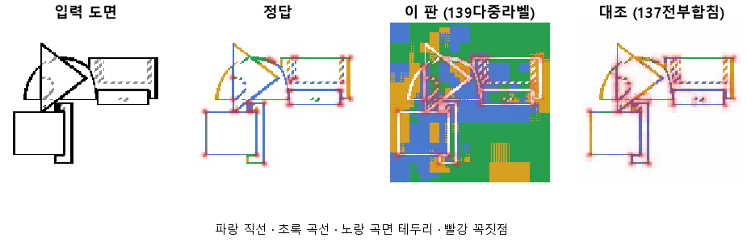

한 줄로
물음: 직선과 곡선이 맞닿은 화소를 둘 다 정답으로 두면, 곡선 옆 직선을 곡선으로 잘못 읽는 일이 줄어들까?
답: 줄지 않았다. 오히려 0.24에서 0.37로 늘었다. 곡선은 0.83으로 올랐지만 직선은 0.70으로 내려갔다. 기준 7개 중 2개만 넘어서 판정은 실패다.
왜 이 판을 했나
앞 판(137)에서는 곡선에서 3화소 안에 있는 직선을 곡선으로 읽는 실수가 0.24까지 줄었다. 대신 곡선을 맞히는 비율이 떨어졌다. 우리는 원인을 정답을 매기는 방식에서 찾았다. 직선과 곡선이 닿는 화소는 실제로 둘 다다. 그런데도 모델에게 하나만 고르라고 시켰다. 그러면 그 근처에서 한쪽으로 기울 수밖에 없다고 보았다.
바꾼 것 하나
화소마다 종류 하나를 고르게 하던 것을 바꿨다. 이제는 종류마다 따로 「이것이 맞나」를 묻는다. 닿은 화소는 직선과 곡선이 둘 다 정답이다. 학습 60바퀴, 학습 부품 3,000개, 시험 부품 299개는 137과 같다.
결과

곡선과 직선에는 목표가 둘 있다. 이 판에서 미리 예측한 값(0.80)과 판마다 재는 최종 목표(0.90)다.
| 이 판 (139) | 대조 (137) | 목표 | 넘었나 | |
|---|---|---|---|---|
| 곡선 옆 직선을 곡선으로 틀림 | 0.37 | 0.24 | 0.15 아래 | ✗ |
| 곡선을 곡선으로 | 0.83 | 0.76 | 예측 0.80 · 최종 0.90 | ✓ · ✗ |
| 직선을 직선으로 | 0.70 | 0.78 | 예측 0.80 · 최종 0.90 | ✗ · ✗ |
| 선이 있는 자리를 찾음 | 0.999 | 0.999 | 0.95 | ✓ |
| 꼭짓점 (F1) | 0.50 | 0.51 | 0.75 | ✗ |
F1은 「찾은 점 중 맞은 비율」과 「정답 점 중 찾은 비율」을 함께 본 점수다. 1이면 완벽하다.
왜 이렇게 나왔나
확인한 것
- 직선과 곡선은 자리만 바꿨다. 곡선은 0.07 오르고 직선은 0.08 내렸다. 모든 선 화소에서 종류를 맞힌 비율은 0.77 대 0.76으로 거의 같다.
- 이 판의 곡선 0.83, 직선 0.70, 곡선 옆 실수 0.37은 136(CNN의 맨 앞 층과 맨 뒤 층만 읽던 판)의 0.82, 0.69, 0.40과 거의 같다. 137이 가운데 층을 더해서 얻은 것을 도로 내놓은 셈이다.
- 표의 숫자는 선이 조금 어긋나도 맞은 것으로 봐주고 센 값이다. 화소를 하나하나 엄격하게 맞춰 세면 곡선 옆 실수는 0.39 대 0.40으로 두 판이 같다.
- 시험 쪽 손실은 45바퀴에서 가장 낮았다. 그 뒤로는 학습 쪽만 계속 내려갔다.
짐작 (아직 확인 안 함)
- 둘 다 켜진 화소는 마지막에 확률을 비교해서 하나로 정한다. 곡선 근처에서는 곡선 확률이 늘 조금 높아서, 닿은 자리를 곡선이 가져갔을 수 있다.
한계
- 시험 부품 299개로 한 번만 돌렸다. 같은 학습끼리 0.1 넘게 어긋난 적이 있다(133·134). 그래서 0.07~0.08 차이는 흔들림 안쪽일 수 있다.
- 손실 식이 바뀌었다. 그래서 두 판의 손실 값은 서로 비교할 수 없다.
- 두 셈법에서 결과가 왜 갈리는지는 아직 설명하지 못했다.
배운 것과 다음
정답을 「둘 다」로 풀어 줘도 곡선 옆 실수는 줄지 않았다. 136, 137, 139 세 판은 직선과 곡선 사이에서 시소만 탔다. 정답을 매기는 방식만 바꿔서는 풀리지 않는다. 마지막에 하나를 고르는 규칙이 의심되지만, 아직 짐작이다.
- 둘 다 켜진 화소가 어느 쪽으로 정해지는지 세어서 위의 짐작을 확인한다.
- 같은 설정으로 다시 돌려 흔들림 크기를 잰다.
- 꼭짓점을 CNN 맨 앞 층(선의 위치를 잘 아는 층)에서 바로 찍게 해 본다.